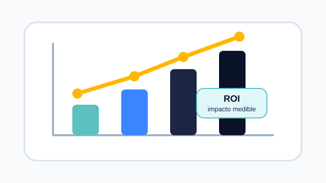

Impacto y direccion estrategica
Esta etapa se centra en como los datos impulsan decisiones estrategicas, optimizan procesos y generan valor real para las organizaciones, considerando tambien aspectos eticos y de mejora continua.

Storytelling con datos para la toma de decisiones
El storytelling con datos transforma informacion compleja en historias claras y comprensibles. Combina analisis, visualizacion y contexto para comunicar hallazgos relevantes.

ROI e impacto en negocio
El valor de un proyecto de datos se mide por su capacidad para mejorar decisiones, reducir costes, aumentar ingresos y generar beneficios medibles para la organizacion.

Retroalimentacion y mejora continua
Los resultados deben revisarse con frecuencia para detectar nuevas necesidades, ajustar soluciones y mantener la calidad de las decisiones a lo largo del tiempo.

Etica, privacidad y gobierno de datos
El uso de datos debe respetar la privacidad, reducir sesgos y mantener reglas claras sobre acceso, responsabilidad y calidad de la informacion.
Los datos generan impacto cuando conectan conocimiento, accion y resultados medibles.